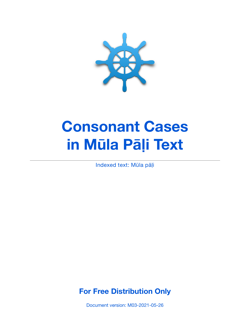

They are generated mainly for Pāḷi consonant pronunciation practice.
For example with "ss", it lists a few word samples selected from the text.
ss: tassa [1] dhammassa [2] yassa [1] uppajjissati [8] cittassa [1]
1. Consonant Cases in Mūla Pāḷi Text 163 cases - covered only Mūla pāḷi text

Document version: M03-2021-05-26
Download [126K] pdf_v3_mula_consonant.zip
2. Consonant Cases in Tipiṭaka Pāḷi Text 494 cases - covered all Pāḷi text
Document version: T03-2021-05-26
Download [196K] pdf_v3_tipitaka_consonant.zip
They are sorted in descending order. Both PDF and TXT format are available.
PDF format
1. All Word Frequency in Mūla Pāḷi
Document version: MPF-01-2021-05-31
Download [3.0M] pdf_mula_pali_freq.zip
2. All Word Frequency in Tipiṭaka Pāḷi
Document version: ATF-01-2021-05-31
Download [24M] pdf_all_tipitaka_freq.zip
TXT Format
All Word Frequency in Mūla Pāḷi: [1.0M] txt_mula_pali_freq.zip
All Word Frequency in Tipiṭaka Pāḷi: [8.3M] txt_all_tipitaka_freq.zip
See:
https://github.com/vpnry/tipitaka/tree/main/misc/dev